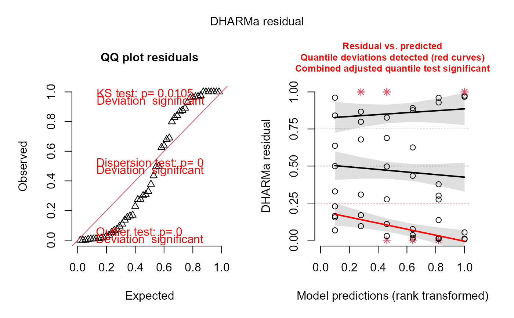
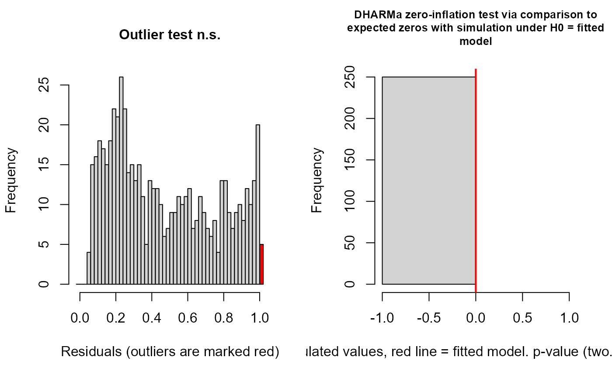

Grafico de residuales de un modelo LM, LMM, GLM, GLMM, GAM, etc
Source:R/resid_DHARMa.R
resid_DHARMa.RdMuestra el ajuste del modelo LM, GLM, GLMM, GAM, etc. Esta función crea residuos escalados mediante la simulación del modelo ajustado, 250 simulaciones por default. Los residuos pueden ser extraídos con residuals.DHARMa. Ver testResiduals para una visión general de las pruebas de residuos, plot.DHARMa para una visión general de los gráficos disponibles. Esta función fue creada para explorar el ajuste, normalidad y homogeneidad de varianzas entre los grupos.
Arguments
- Modelo
Un modelo LM, GLM, GLMM, GAM.
- nsim
Número de simulaciones. Cuanto menor sea el número, mayor será el error estocástico en los residuales. Además, para n muy pequeño, los artefactos de discretización pueden influir en las pruebas. Por defecto es 250, que es un valor relativamente seguro. Puede considerar aumentar a 1000 para estabilizar los valores simulados.
References
Ali MM, Sharma SC (1996) Robustness to nonnormality of regression F-tests. J Econom71, 175–205.
Lumley T, Diehr P, Emerson S, Chen L (2002) The importance of the normality assumption in large public health data sets. Annu Rev Public Health23, 151–169.
Examples
data(warpbreaks)
modelo <- glm(breaks ~ wool + tension, family= poisson("log"), data= warpbreaks)
resid_DHARMa(modelo)
#> Si Kolmogorov-Smirnov test (KS test) p < 0.05, entonces no hay normalidad en los residuales. Sin embargo, esta prueba es muy sensible al tamaño de muestra, con tamaño de muestra grande el valor de p tiene a < 0.05, pero la distribución se aproxima mucho a la normal. Se recomienda ser un poco flexible con esta prueba al momento de examinar los residuales (examinar visualmente). Con tamaños de muestra grandes mayores a 500 el Teorema del Limite Central garantiza que los coeficientes de regresión se distribuyen normalmente en promedio (Ali & Sharma, 1996, Lumley et al., 2002).Outlier test: p < 0.05, no hay outliers. En caso de haber outliers, usar la función outliers.DHARMa para saber cuáles son los datos influyentes.Dispersion test: p < 0.05, Indica problemas de sub/sobredispersión. En caso de haber problemas se recomienda ajustar el parámetro dispformula, solo para la paquetería glmmTMB.Gráfico de la derecha muestra la distribución esperada de los residuales, mediante simulaciones. Esto es útil cuando no sabemos cuál es la distribución nula de los residuales. El grafico de la derecha muestra los residuales contra los valores esperados (ajustados). Estas líneas pueden no ajustarse debido a un tamaño de muestra reducido.Recuerda citar el paquete DHARMa. Usa citation('DHARMa') para ver como citar este paquete.

### tambien se puede usar en GLMMs:
datos <- datasets::ChickWeight
library(lme4)
#> Loading required package: Matrix
modelo <- glmer(weight ~ Diet +(1|Chick), family=gaussian("log"), data = datos)
#> boundary (singular) fit: see help('isSingular')
resid_DHARMa2(modelo)
#> Para saber si hay outliers, Outlier test: p > 0.05, no hay outliers:
#>
#> DHARMa outlier test based on exact binomial test with approximate
#> expectations
#>
#> data: res
#> outliers at both margin(s) = 5, observations = 578, p-value = 0.8
#> alternative hypothesis: true probability of success is not equal to 0.00797
#> 95 percent confidence interval:
#> 0.00281 0.02007
#> sample estimates:
#> frequency of outliers (expected: 0.00796812749003984 )
#> 0.00865
#>
#> Para saber si hay evidencia de posible effecto inflado por exceso de ceros. p > 0.05 no hay efecto:

#>
#> DHARMa zero-inflation test via comparison to expected zeros with
#> simulation under H0 = fitted model
#>
#> data: simulationOutput
#> ratioObsSim = NaN, p-value = 1
#> alternative hypothesis: two.sided
#>